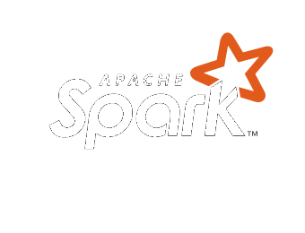
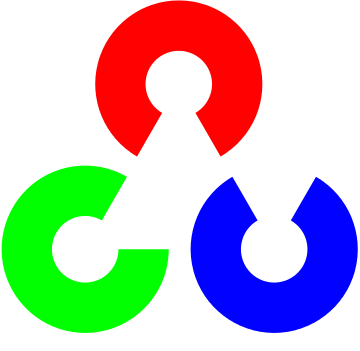

RONNY MATHEW
I WORK ON
About Me
As a results-oriented Applied AI/ML Leader at Rue Gilt Groupe, I drive the development and implementation of cutting-edge AI solutions that deliver significant business value. My expertise spans Generative AI, Machine Learning, Data Science & Analytics (SQL & NoSQL), Full-Stack Web Development, and Software Engineering (Python, Scala, Java, C++), enabling me to lead diverse teams and architect innovative products.
Experience
Rue Gilt Groupe
New York, NY
Sr Manager, Data Science & AI
MAR 2021 - PRESENT
- Crafting and driving the DS & AI team roadmaps and vision, leveraging data-driven insights from experimentation and analytics, and collaborating with cross-functional team leads and partners to shape innovative solutions.
- Built and led a high-performing team of 8+ members, including data scientists, engineers, and analysts. Successfully rebuilt and managed the team through leadership transitions and shifting business priorities, ensuring consistent delivery, adaptability, and strong team morale.
- Integrated generative AI capabilities into our AI platform, incorporating RAG agents, vector databases, and pre-trained LLMs, while spearheading the adoption of Gen AI use cases at RGG.
- Driving an org-wide initiative to reduce operational costs by decoupling data and compute across warehouses and data lakes using interoperable formats like Iceberg and Delta Lake.
- Architected and led the development of our scalable cloud-based AI platform incorporating concepts like serverless compute, streaming data and inference, accelerating development, slashing model deployment times by more than 50%.
- Designed and developed of a custom scalable deep learning ranking algorithm. Trained on 1TB+ data, it personalizes the homepage for members, enhancing brand and product discovery, generating over than $20M/yr revenue.
- Architecting the transformation of legacy models to state-of-the-art algorithms using fine-tuned CLIP, BERT, and LLMs, shaping next-gen personalization.
- Leading cross functional initiative to enhance search experience on site with semantic and AI search capabilities leveraging LLMs.
Senior Data Scientist
JAN 2018 - MAR 2021
- Led the initiative and owned the development of a custom sequential deep learning recommender (RNNs, TensorFlow), enhancing new member personalization and achieving a 6% activation rate increase and 20% email CTR uplift.
- Spearheaded the engineering and launch of Product Similarity v1 (Spark, NLP), resolving key product discovery issues and generating over $4M in monthly revenue.
- Drove the evolution of product similarity to v2 by integrating computer vision embeddings (ResNet-50), delivering an additional $1.9M in annual incremental revenue.
- Championed the development of a collaborative filtering-based personalization system with advanced logic for pricing and cold-start, achieving a 37% conversion rate increase.
- Innovated an apparel size normalization model, boosting conversion by 5% and significantly reducing returns through a streamlined shopping experience.
- Prototyped and delivered impactful AI solutions including a contextual multi-armed bandits framework (TensorFlow Agents) and a personalized search/sort POC (Elasticsearch with vector embeddings).
Rue La La
Boston, MA
Data Scientist (Coop)
Jan 2017 to Aug 2017
- Developed impactful NLP and computer vision models (Spark, Keras, TensorFlow) and data-driven tools, significantly boosting revenue and operational efficiency.
Northeastern University
Boston, MA
Research Assistant
Sep 2016 to Dec 2016
- Contributed to developing a MEAN stack web application for assessing structural resilience against natural hazards.
First Help Financial
Newton, MA
Software Programming Intern
June 2016 to Aug 2016
- Developed a Django/Jersey web platform, Python data scripts, and an Angular 2 prototype to automate operations and enhance data analytics capabilities.
Northeastern University
Boston, MA
Research Assistant
Feb 2016 to Aug 2016
- Applied machine learning (Python, MongoDB) to analyze social influence dynamics, improving predictive model accuracy through feature engineering.
Grey Ocean Analytics
Bengaluru, India
Software Engineer
Feb 2015 to Aug 2015
- Led a junior team and developed core AI modules (Python, AWS), architected NoSQL databases, and ensured product quality through rigorous testing.
Evolvence Capital & Ginza Holdings
Dubai, UAE
DevOps Engineer
Apr 2012 to Dec 2014
- Managed and deployed diverse IT systems including ERP (MS Dynamics NAV), eCommerce (Magento), CMS, and databases for retail and hospitality.
Education
Harvard University
Cambridge, MA
Harvard Summer School
STAT-100: Introduction to Quantitative Methods
July 2018 to Aug 2018
Northeastern University
Boston, MA
College of Computer and Information Science
Master of Science in Computer Science
Sept 2015 to Dec 2017
Courses
- Foundations of Artificial Intelligence
- Data Mining
- Information Retrieval
- Algorithms
- Parallel Data Processing with Hadoop
- Web Development
- Programming Design Paradigms
Heriot-Watt University
Dubai, UAE
Master of Science in Computer Systems Management, Distinction with Honors.
January 2012 to November 2013
Courses
- eCommerce Technologies
- Databases
- Systems Programming
- Network Applications
- Mobile Programming
University of Kerala
Kerala, India
Bachelor of Technology in Electronics and Communication Engineering, First Class.
October 2006 to Aug 2010
Courses
- Programming with C++
- Digital Logic
- Microprocessors
Projects
Northeastern University
Boston, MA
Nov 2015 to Dec 2015
- Developed project to Model User Preferences for Location Based Recommendations using python and mongoDB.
Jan 2016 to April 2016
- Form Maker Application using Node.js, MongoDB and Angular.JS.
- GlueC: A Web Application to manage all sorts of eCommerce Inventory Management using Node.js, MongoDB and Angular.JS (MEAN stack App).
Heriot-Watt University
Dubai, UAE
Jan 2012 to Nov 2013
- Developed and Completed Masters’ Dissertation on Real-time Data Analytics of the Sematic Web using node.js, mongoDB, socket.io, Twitter API. Currently extending this project to include Advanced Analytics.
- Other Academic Projects: PHP Bookstore, PHP DealOn website, PHP Webmail client, Android Diary Application, Android Quiz Application, Shell programming, Web Browser with C# .NET, Java Applet for message signing.
Minor Projects
University of Kerala
India
June 2008 to Aug 2010
- Acted as Webmaster for IEEE MBCET (IEEE College Chapter) from 2008 to 2009 (Website powered by Joomla).
- Served as Graphic Designer for College Newsletter, ‘The Fourth Module’ and College Magazine ‘Route 66’.
Additional Projects
- Worked on a Ruby on Rails eCommerce project for a startup.
- Performed Map Reduce operations on a sample dataset of Twitter using python (Coursera.com).
- Completed projects of Interactive games using Python course, from Rice University, Texas (Coursera.com).
Technology




Interests
Photography
There are so many wonderful things around us that we take for granted. Through photography, I hope to bring these to attention, so that everyone can appreciate its beauty. The photos you find on this site are some of my work. If you are a fellow photographer, connect with me on 500px.
Music
Music is one of the things that I cannot live without. It sets the pace of my day and sometimes even inspires me. If I like a song, I learn the lyrics by the next day. I'm also an occasional singer, connect with me on SoundCloud to listen to some of my tracks.
Travel
New Places, New Experiences. I have been travelling most of my life. It is difficult to find a place that I haven't been to in the cities that I have lived in. Most of my snaps are from my travels.